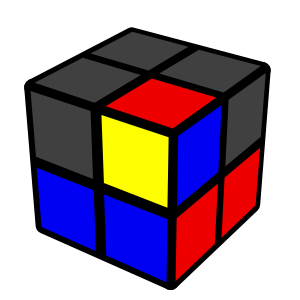
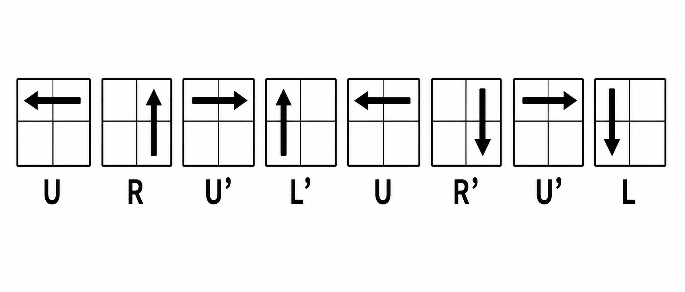

.png)
.png)
Step 1 — White Layer
- Pick a base piece(Start with White/Red/Blue)
- Find the matching corner(Look in the top layer)
- Insert the piece
- Complete the remaining two corners
Hold the cube so a corner with White (e.g., White-Red-Blue) is in the bottom-left front position with white facing down.
.png)
Look for another white corner that shares a color with your base piece (e.g., White-Red-Green). Rotate the top layer (U) until that piece sits directly above where it needs to go (top-right front).
.png)
Hold the destination spot at the bottom-right front, then repeat the trigger: R U R' U' Repeat this 1 to 5 times until the white sticker points down and the side colors line up.
Repeat the process for the remaining white corners until the entire bottom layer is solved with matching side colors.
Step 2 — Yellow Corners
Turn the top layer (U) to see how many corners are in the correct position (matching the colors of the pieces below them, regardless of orientation).

- If there are 4 correct corners
- If there are 0 correct corners, turn the (U) layer until at least 1 corner matches.
- If there is 1 correct corner, hold the matching corner in the front-right-top position.
- If there are 2 correct corners (next to each other), turn the (U) layer until only 1 corner matches.
- If there are 2 correct corners (across/diagonal from each other), hold any corner in the front-right-top position.
Skip to Step 3!
Then do the following algorithm:

If the remaining corners aren't solved after 1 execution, run it once more with the correct piece still held at front-right-top.
Step 3 — Orient the Last Layer
- Flip the cube upside down
- Target an unsolved corner
- Solve the corner orientation
- Bring the next unsolved corner over
- Finish the solve
Flip the cube so your solved white layer is now on top, and the unsolved yellow layer is on the bottom.
.png)
Rotate the bottom layer (D) until an unsolved corner with yellow facing the side sits at the bottom-right.
Execute the trigger until yellow points down: R U R' U'
(It usually takes 2 or 4 repeats. Do not forget the final U' move of the trigger!)
DO NOT rotate the whole cube. Turn only the bottom layer (D / D') to move the next unsolved piece into the bottom-right spot. Repeat R U R' U' until solved.
Once all yellow stickers face down, the rest of the cube will automatically fix itself! Just turn the bottom layer to align the colors.